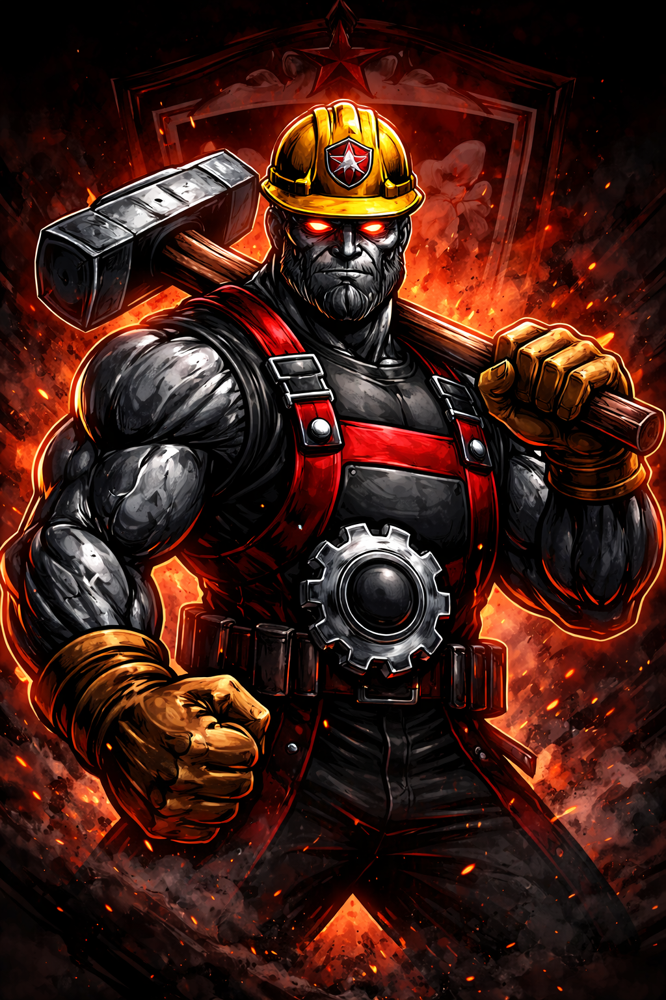

Ferrox — The Iron Worker
Meet the official mascot of Vale de Ferro, a symbol of strength, resilience and relentless determination.

Origin
Ferrox was born in the heart of the industrial valley, forged in fire, steel and the spirit of hardworking people. Legend says he came to life during a decisive match, embodying the strength of the workers and the passion of the fans.
Personality
Silent, intense and fearless. Ferrox does not waste words — he lets his presence speak. To the fans, he is inspiration. To opponents, he is intimidation.
Symbolism
Ferrox represents everything Vale de Ferro stands for: discipline, strength, resilience and unity. He is the living embodiment of a team built on effort and determination.
Famous Quotes
- "Steel does not break. It becomes stronger."
- "This is work. This is Vale de Ferro."
- "If you fall, rise. If you’re tired, keep going."
- "On our ground, no one dominates."